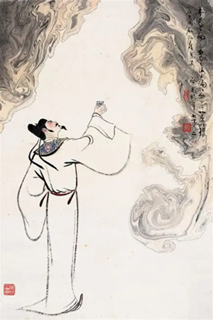
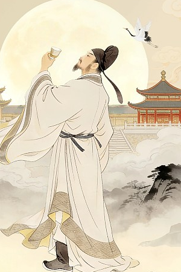

唐诗泛指创作于唐代（公元618年~907年）的诗，也可以引申指以唐朝风格创作的诗。唐诗上承魏晋南朝诗，下开宋诗，唐代也被视为中国历来诗歌发展最盛的黄金时期，因此有与宋词并举之说。
唐代以后，唐诗的选本、选集不断涌现，现今流传最广的是蘅塘退士编选的《唐诗三百首》。清朝康熙年间的《全唐诗》整理收录了二千二百多名诗人超过五万多首唐诗。
中国自《诗经》、《楚辞》、汉赋、《乐府》以来一直有作韵文的传统。《诗经》的诗句多以四字为一句。到了汉乐府字数则比较多变。从汉到魏晋南北朝发展出来的古体诗，有不固定字数的、亦有五言、六言或七言的，但句数不限。隋唐除了承袭了古体诗的体裁，亦同时继承齐梁的永明体并将之发展完善，成为音律工整协美的近体诗，如四句的绝句和八句的律诗，对押韵、平仄等等格律上有更严谨的要求。唐诗所包含的题材多样化，既有抒发个人情感，亦有深刻反映现实社会的作品，意境深远，达到了甚高之艺术水平。
词，是一种诗歌艺术形式，是中国古代诗体的一种，亦称曲子词、诗馀、长短句、乐府。始于唐代，在宋代达到其顶峰。一开始伴曲而唱，所以写词又称作填词、倚声。后来逐渐独立出来，成为一门专门的诗歌艺术。
清初的浙西词派，为救明词之弊，主张尊南宋词、尚醇雅，以姜夔、张炎为圭臬。戈载的《宋七家词选》将周邦彦、史达祖、姜夔、吴文英、王沂孙、张炎、周密列为宋七大词家。而到之后的常州词派，张惠言有感于浙西词派的题材狭窄,内容枯寂，提出了“比兴寄托”的主张，强调词作应该重视内容，并推崇唐五代，轻南宋词。张惠言的词论有超越前人之处。但他的词学评论常缺乏逻辑论证，不能实事求是，如论说温庭筠、韦庄和欧阳修的一些艳词都有政治寄托，即失之偏颇。而再之后的周济，撰定《词辨》﹑《宋四家词选》，言:“推明张氏之旨而广大之”，但他得论述不囿于张氏的立论，以周邦彦﹑辛弃疾﹑ 王沂孙﹑吴文英为词四大家。
而到晚清，一部分传统词派的词人，如况周颐等清末四词家，受到常州派的影响。而况周颐著有蕙风词话，集合前人词话，强调作词有三要: 曰重、拙、大。并讲求"性灵流露"与"书卷酝酿"。另外受到西学影响的新氏词派，如王国维著之人间词话，对词学提出不同意见。王国维喜爱北宋词的天然明畅，否定南宋词的雕饰及词旨晦涩，以情感的真挚为评词标准，对南宋雅词(如姜夔、吴文英、张炎词)评价甚低。这些观点在后世影响很大。
